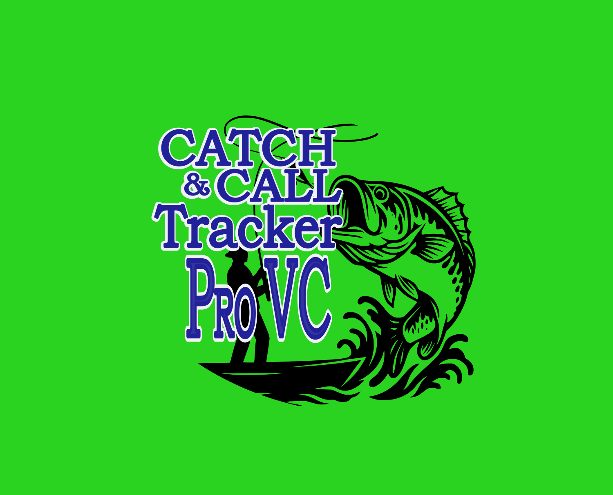
🎣 NOW LIVE ON GOOGLE PLAY & THE APP STORECatch & Call ProVC is hands-free, voice-controlled fish logging built for the way you actually fish — speak your catch, keep your line wet, and let the app handle the rest.
Start free, then upgrade to unlock GPS mapping and hands-free voice control.
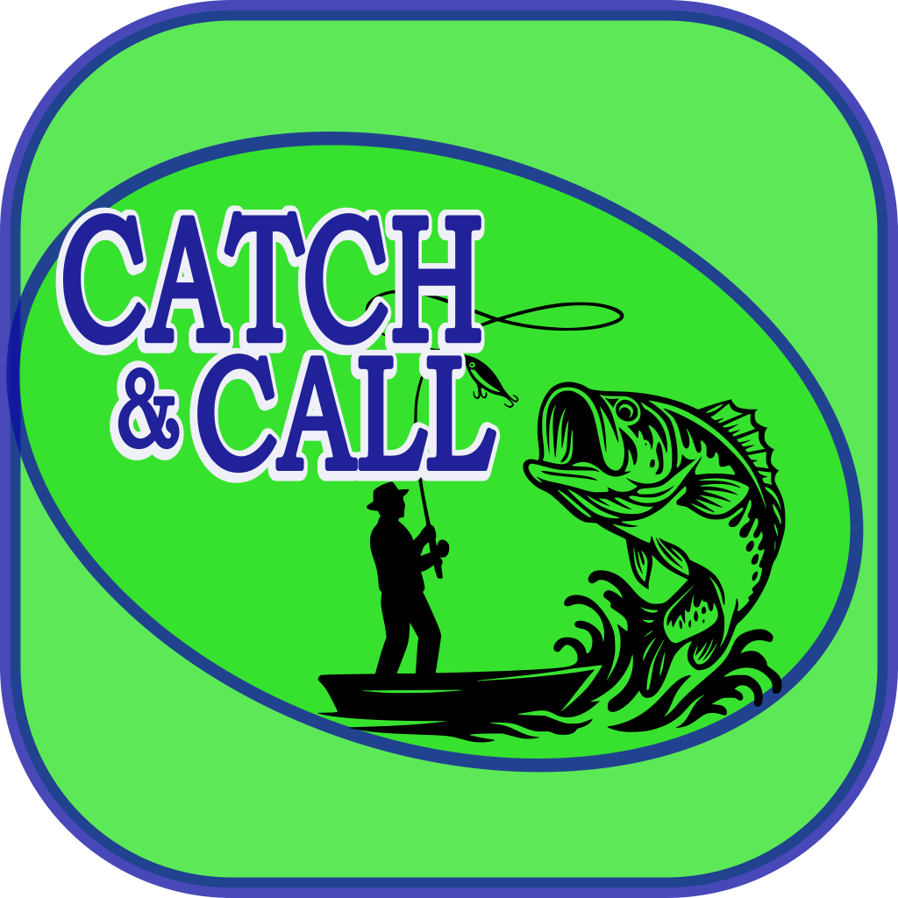
Log your catches and get started — no cost.
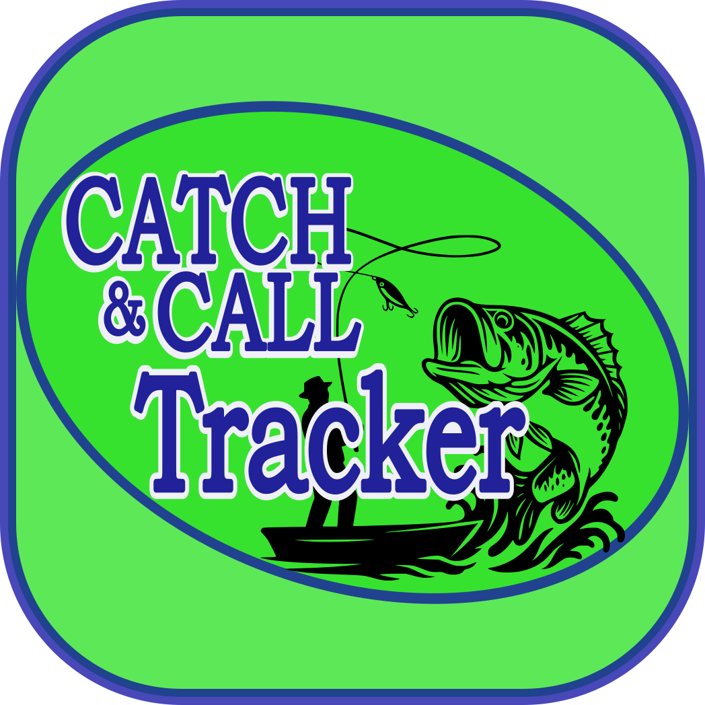
GPS catch mapping, pins & KML export.
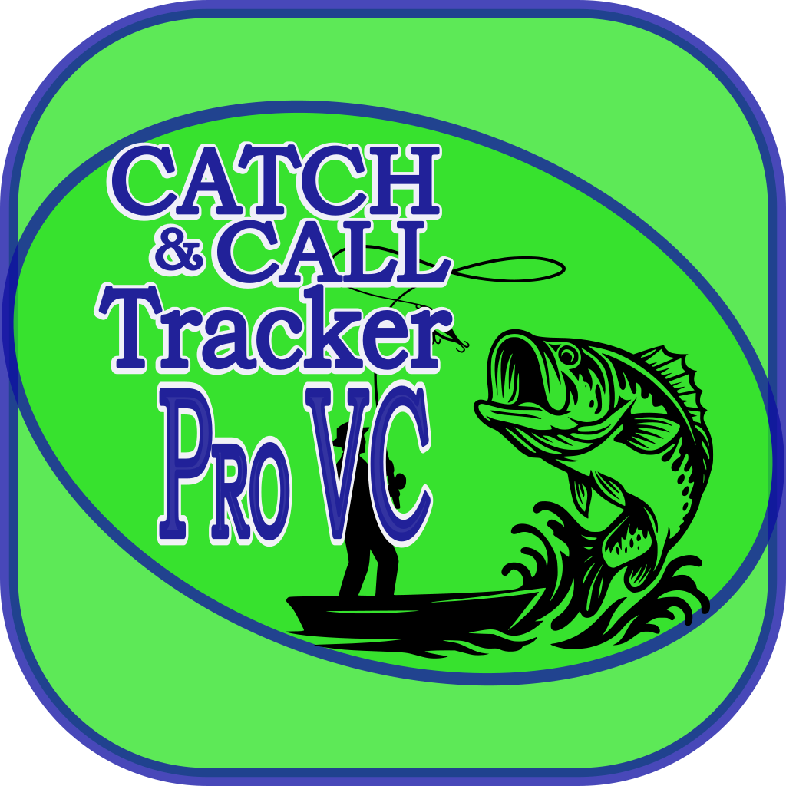
Everything in Tracker plus hands-free voice control.
Whether you're out for the weekend, chasing a check, or paddling solo — Catch & Call has a mode for you.
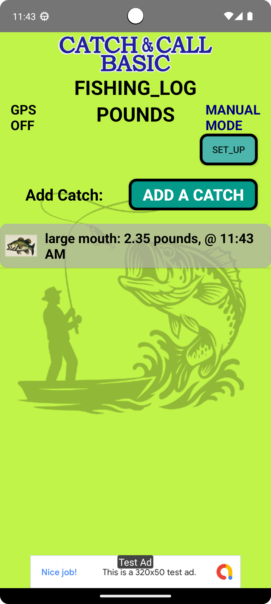
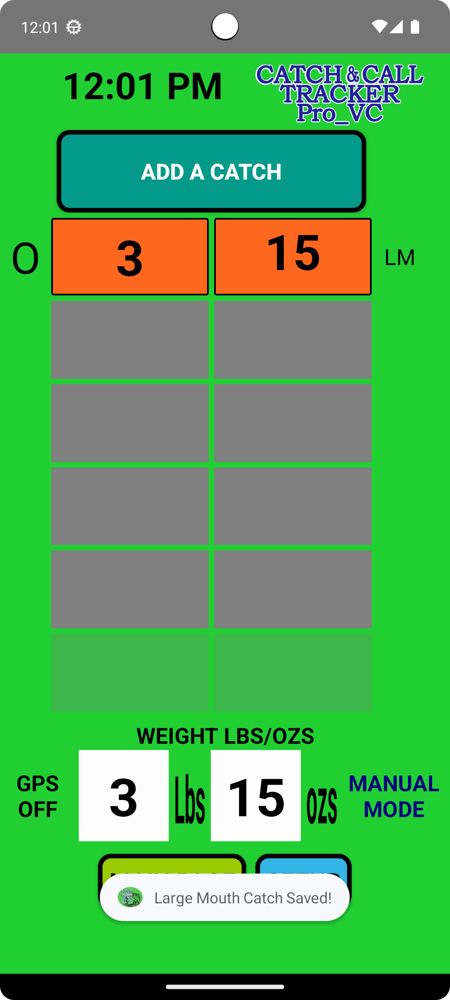
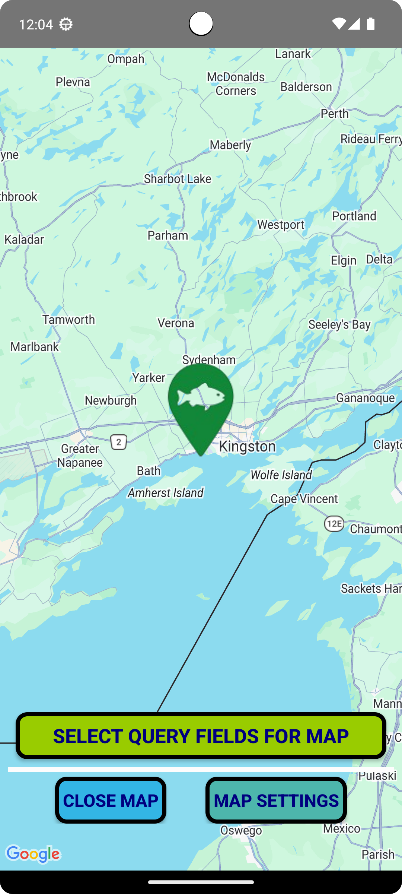
Premium tools that work as hard as you do.
Speak it and it's saved. Keep both hands on the rod where they belong.
Drop a pin on every catch and see them all on an interactive map.
Always know your best bag and stay within limits, automatically.
Export your catches as CSV & KML files to share or analyze.
Build and organize your own species list the way you fish.
Live on Google Play and the App Store — fish your way, on your device.
A quick tour of the app, screen by screen.
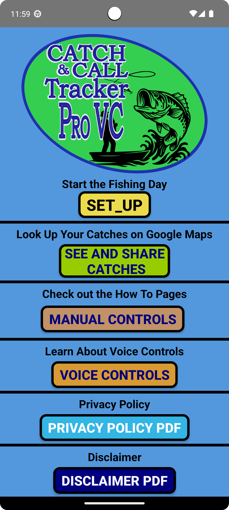
Main Menu
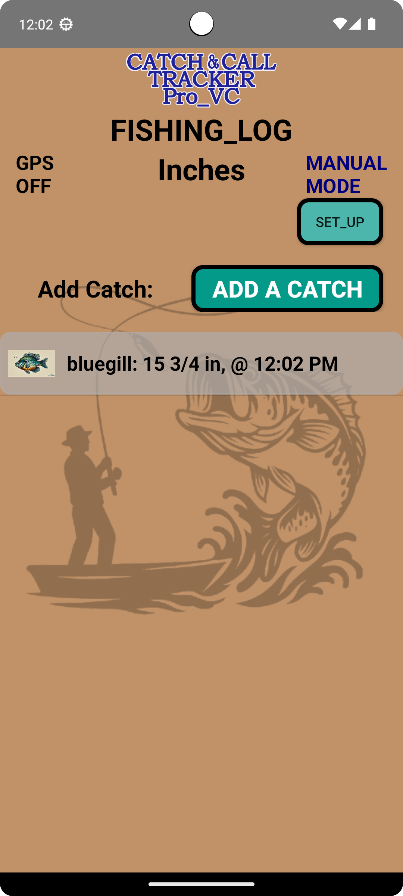
Length Logging
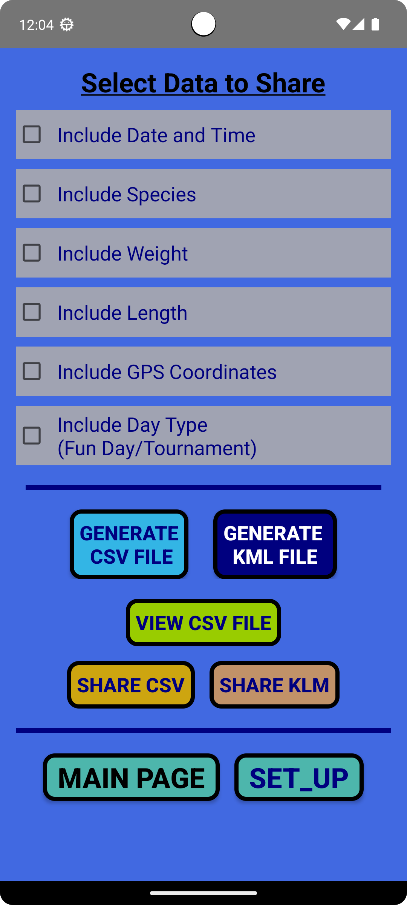
Share & Export
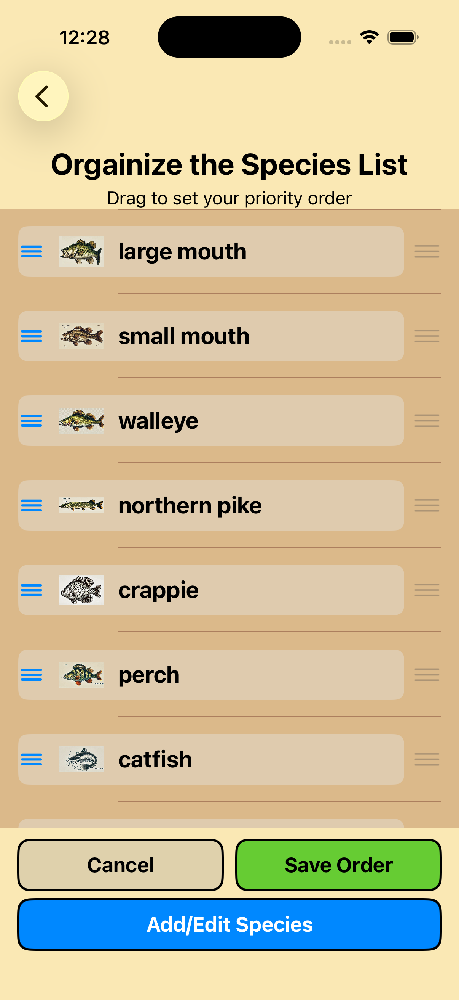
Species List
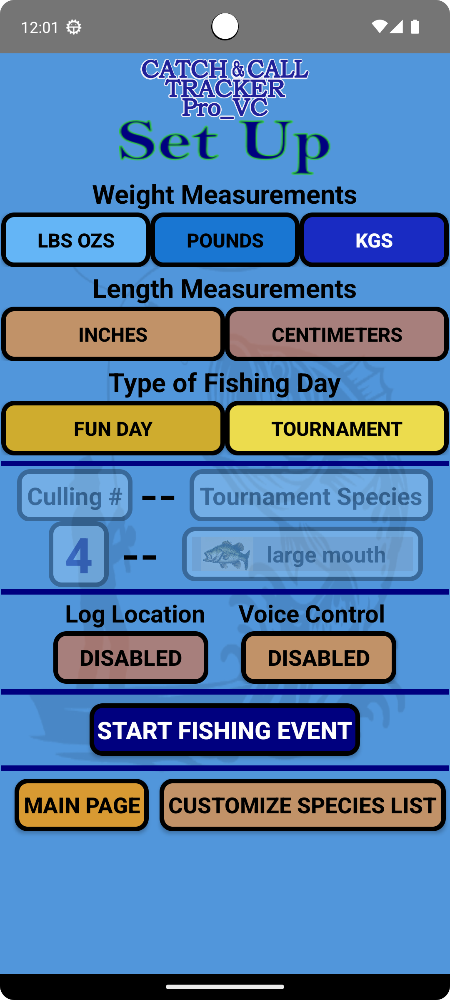
Easy Setup
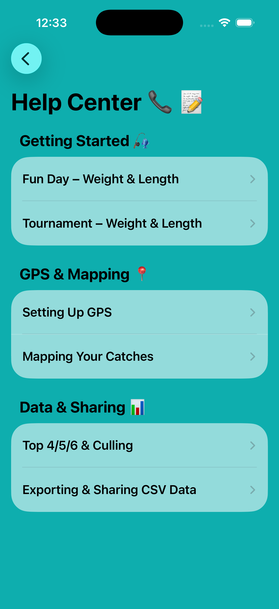
Help Center
Two subscriptions, monthly or yearly. Cancel anytime.
Available now on Google Play and the App Store.
Download Catch & Call ProVC today and spend more time fishing — and less time logging.